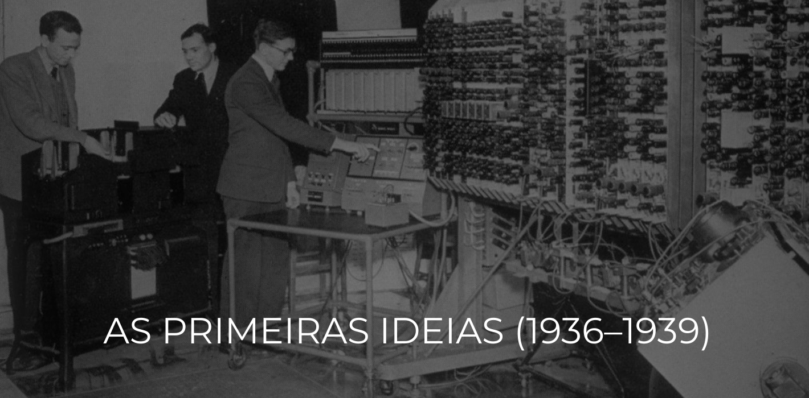

ERAS

TEMAS
FUNDAMENTOS TEÓRICOS E CONCEITUAIS
Antes do primeiro chip ou circuito, existia a ideia. Explore os modelos teóricos e os conceitos matemáticos que formam o DNA de toda a computação moderna, desde a visionária Máquina de Turing até a arquitetura que define seu computador hoje.
A ERA ELETROMECÂNICA: RELÉS E ENGRENAGENS
Com o som de relés e engrenagens, nasceram as primeiras máquinas de calcular programáveis. Conheça os gigantes eletromecânicos, como o Z3 e o Harvard Mark I, que transformaram a lógica abstrata em realidade física.
COMPUTAÇÃO PARA FINS ESPECÍFICOS: GUERRA E CIÊNCIA
Em meio a uma guerra de códigos e desafios científicos, a necessidade acelerou a inovação. Mergulhe na história das máquinas criadas para uma única missão: decifrar o código Enigma com o Colossus, resolver equações complexas e dar uma vantagem decisiva à ciência e aos Aliados.
A REVOLUÇÃO ELETRÔNICA: A ERA DAS VÁLVULAS
O barulho dos relés deu lugar ao brilho silencioso das válvulas. Veja como a troca da tecnologia mecânica pela eletrônica representou um salto quântico em velocidade e poder, dando vida a "cérebros gigantes" como o ENIAC e inaugurando a computação de alta velocidade.
O NASCIMENTO DO SOFTWARE E DO COMPUTADOR MODERNO
Este é o momento em que a máquina ganhou uma "memória". Descubra a invenção que separa as calculadoras dos computadores modernos: o programa armazenado. Explore como o Manchester 'Baby' e o EDSAC aprenderam a guardar e executar instruções, dando à luz o conceito de software.
TECNOLOGIAS, PESSOAS E COMUNIDADE
Por trás de cada computador gigante, existem os componentes revolucionários e as mentes brilhantes que os conceberam. Conheça as tecnologias fundamentais, como o transistor, e celebre os pioneiros e as organizações que construíram a comunidade que impulsiona a computação até hoje.